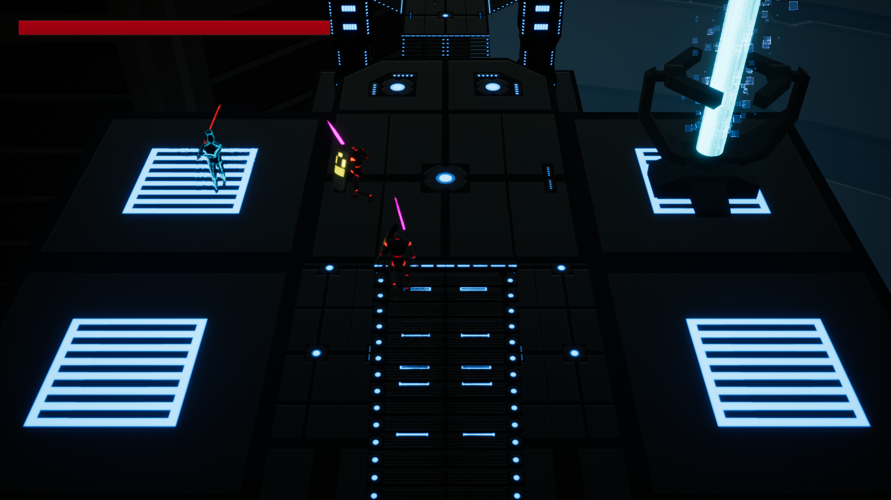
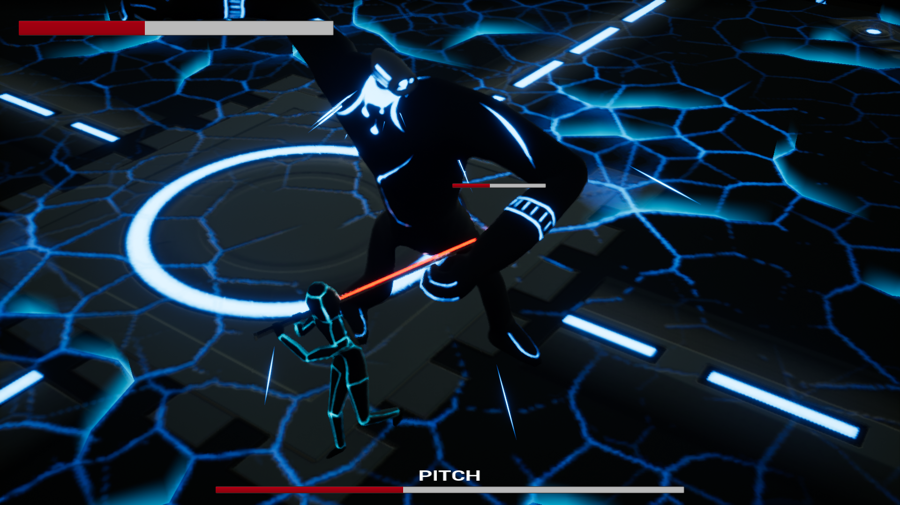

.WAV - A third-person music-themed action game
Engine: Unreal Engine 4
Other Tools: Blender, Substance Painter
This game started out as a game jam project for Global Game Jam 2017. The theme of the jam was about waves, so we made a game where you attack enemies with sound waves. Different waveforms (sine, square, sawtooth) could damage different types.
After the game jam, we decided to continue working on the game, adding more diverse weapons, better animations, and dynamic cameras. Instead of just damaging different enemy types, the different waveforms are now entirely different weapons: a sword, a hammer, and a halberd, all of which have different animations. Instead of using an isometric camera, we have different camera zones, where the camera will follow the player character along a spline, and then fade into another camera when the player transitions between zones. We also created a boss enemy for the player to fight. The boss has four different melee attacks and two ranged attacks, and a second phase where it changes its behavior, as well as the look of the arena.
On this project, I worked with one friend, Kate Briggs. We used Unreal Engine 4, and I used Blender and Substance Painter to create all of the 3D art.